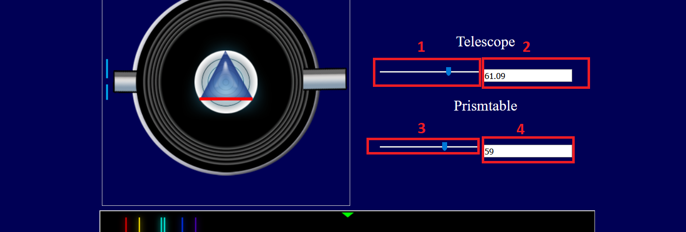

μ-λ
Telescope
Prismtable
Your browser does not support the canvas element.
×
Instructions
1st slider to adjust the position of the telescope. (
1
)
1st text box to read the value of slider 1. It can be used for fine adjustment.(
2
)
2nd slider to adjust the position of the prism. (
3
)
2nd text box to read the value of slider 2. It can be used for fine adjustment.(
4
)
To observe the continious motion of spectra, just click on the slider button and the use up/down key of you keyboard.
Wavelengths are 420.6 nm, 447.2 nm, 492.2 nm, 501.6 nm, 587.6 nm, 667.8 nm
